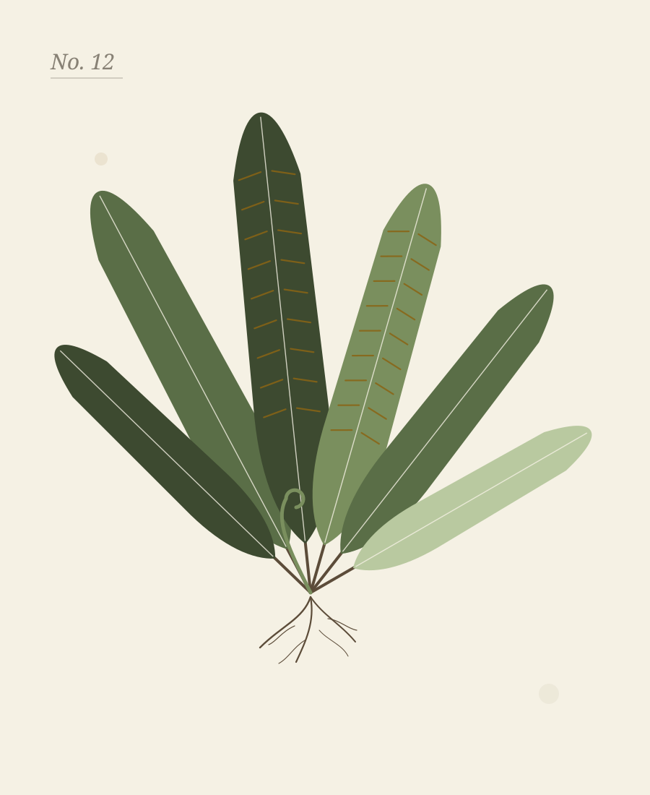

Component
Flare
Flare is everything a template adds beyond the contract. Natural's comes out of a herbarium cupboard: a mounted plate with its label, a paper tag, a page from the collecting book, a round stamp, and the leaf sprig as a block of its own. Each sits inside a <div class="natural-flare"> so a template swap can strip it. The soil texture and the corner tint are not flare; they are tokens on <body> and need no markup.
The plate
The signature, and the hero of the overview and both example entries. A sheet held down by two strips of linen tape (pseudo-elements), with a label glued over its bottom corner. The label is a <figcaption> so the data belongs to the picture: a kicker, the binomial in Fraunces italic with the authority in roman, and a <dl class="natural-data"> of collection data. Any first child of .hero may be a plate; below 30rem the label straightens and drops under the sheet.

Herbarium
Asplenium scolopendrium L.
- Common
- Hart's-tongue fern
- Collected
- Barn wall, north side, 14 May
- Habit
- Evergreen fern, to 45 cm
- Soil
- Lime, damp, shaded
- Det.
- M. Penrose
<div class="natural-flare">
<figure class="natural-plate">
<img src="../../assets/specimen.svg" alt="A pressed hart's-tongue fern on a cream sheet" width="900" height="1100">
<figcaption class="natural-label">
<p class="kicker">Herbarium</p>
<p class="natural-binomial">Asplenium scolopendrium <span class="natural-auth">L.</span></p>
<dl class="natural-data">
<dt>Common</dt><dd>Hart's-tongue fern</dd>
<dt>Collected</dt><dd>Barn wall, north side, 14 May</dd>
<dt>Habit</dt><dd>Evergreen fern, to 45 cm</dd>
<dt>Soil</dt><dd>Lime, damp, shaded</dd>
<dt>Det.</dt><dd>M. Penrose</dd>
</dl>
</figcaption>
</figure>
</div>The rest of the desk
Tag
A paper tag with a punched hole and a string down the margin, for a notice or a short form. The example site hangs one beside the nursery's hero and another round the enquiry form. The hole and the string are pseudo-elements; on a phone they go and the tag is a plain panel.
This week at the gate
- Open
- Thursday to Sunday, 10 to 5
- Looking good
- Water avens, hart's-tongue, quaking grass
- Bare-root
- List opens 1 October
<div class="natural-flare">
<div class="natural-tag">
<p class="kicker">This week at the gate</p>
<dl class="natural-data">
<dt>Open</dt><dd>Thursday to Sunday, 10 to 5</dd>
<dt>Looking good</dt><dd>Water avens, hart's-tongue, quaking grass</dd>
<dt>Bare-root</dt><dd>List opens 1 October</dd>
</dl>
</div>
</div>Field note
A ruled panel with a rust margin line. The lines are a repeating gradient sized to the line height, so text sits on them; the margin is ::before. Put anything in it; a kicker as the first child works as a heading.
Field note · 14 May
Hart's-tongue fern under the north wall has put out six new fronds since the rain. Moved the two pots of lemon balm into the shade before they bolt.
Soil still cold at a hand's depth. Wait another week on the beans.
<div class="natural-flare">
<div class="natural-note">
<p class="kicker">Field note · 14 May</p>
<p>Hart's-tongue fern under the north wall has put out six new fronds since the rain. Moved the two pots of lemon balm into the shade before they bolt.</p>
<p>Soil still cold at a hand's depth. Wait another week on the beans.</p>
</div>
</div>Stamp
A round seal in moss with a double ring, tilted a few degrees. Small tracked capitals around one italic word in Fraunces. The same class on a .btn is the stamp button.
<div class="natural-flare" aria-hidden="true"><span class="natural-stamp">Grown on<strong>paper</strong>est. 2026</span></div>Sprig
The page-break ornament as a standalone block, a little larger. It is the same --natural-sprig mask filled with --natural-moss, so it recolours with the scheme. Use <hr class="page-break"> when you mean a break between sections; use this when you only want the drawing.
<div class="natural-flare natural-sprig" aria-hidden="true"></div>Variants of contract components
Natural also gives five contract components a variant of its own. They are ordinary components with one more class, so they need no wrapper, and each is documented on its component's page.
| Class | On | What it makes |
|---|---|---|
.natural-specimen | .card | A mounted specimen with a label for a body |
.natural-key | .accordion-group | A dichotomous key with numbered couplets |
.natural-calendar | .table-wrap | A planting calendar, a dot per month |
.natural-spread | .fifty-fifty | A plate beside its notes |
.natural-stamp | .btn | A rubber-stamp button |
Classes
The rules live in css/global.css under /* == flare == */; the hero's own rules are under /* == utilities == */.
| Class | Purpose |
|---|---|
.natural-flare | The wrapper for flare that is markup; strip it when swapping templates |
.natural-plate | A mounted sheet: padded surface, shadow, two tape strips as ::before and ::after |
.natural-label | The label slip glued over the plate's corner; paper and ink tokens, a slight tilt |
.natural-binomial | A Latin name in Fraunces italic; .natural-auth inside it is the authority, roman and small |
.natural-data | A two-column <dl>: small-caps field, roman value |
.natural-lede | In .hero: the one italic Fraunces line under the heading |
.natural-tag | Paper tag; ::before is the punched hole, ::after the string |
.natural-note | Ruled paper panel; ::before is the margin line |
.natural-stamp | Round moss seal with a double ring; strong inside is the italic word. On a .btn, the stamp button |
.natural-sprig | The sprig mask as a free-standing block |
Notes
- Every colour here is a token:
--natural-moss,--natural-moss-soft,--natural-tape,--natural-tag-paper,--natural-tag-ink,--natural-rule,--natural-sprigintheme.css. Nothing inglobal.cssnames a colour. - The label keeps its paper and ink in both schemes, so a plate in the dark half is a cream sheet on soil, which is the point.
- Nothing animates continuously. The only motion in the template is the tag on the feature card, a transition the global
prefers-reduced-motionrule shortens to nothing. - The stamp and the sprig are decoration; mark them
aria-hidden="true"as the examples do. The plate, the tag and the field note are content and should not be. - The soil texture (
--natural-soil) and the corner tint (--natural-moss-tint) are background layers onbody, documented on the theme page.